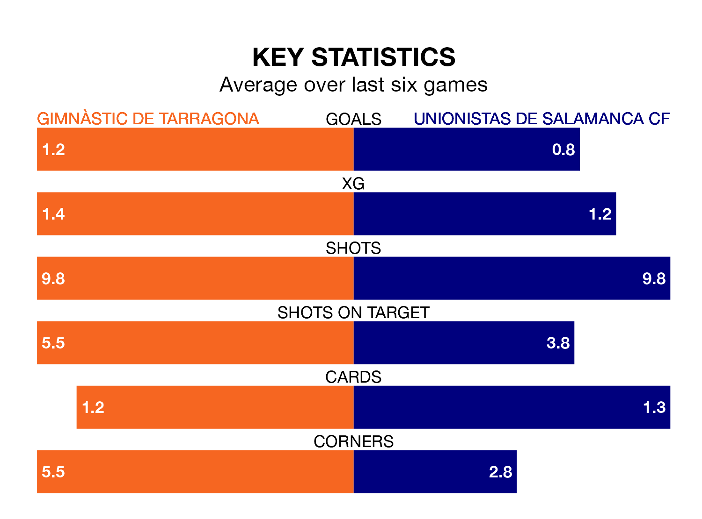

Two of Primera Division RFEF Group 1's meanest defences go head-to-head at Nou Estadi de Tarragona on Sunday, when Gimnàstic de Tarragona host Unionistas de Salamanca CF.
No teams have conceded fewer goals than Gimnàstic de Tarragona to date: the home side have let in just 17 goals in 27 games.
Unionistas de Salamanca have conceded 21 goals in 27 games, giving them the joint-third tightest back line so far this season.
Key to Gimnàstic de Tarragona's home form has been Alberto Varó Lara, who has allowed 0.57 goals past him per 90 minutes, compared to 0.58 for Pablo Cacharrón Blanco in the opposite net.
Gimnàstic de Tarragona are second in the table after 27 games, of which they have won 14 and drawn eight, earning 50 points.
Unionistas de Salamanca are seven places behind the hosts in ninth, with eight wins and 12 draws putting them on 36 points.
Gimnàstic de Tarragona are in reasonable form in Primera Division RFEF Group 1, with three wins and two draws from their last six games.
With a win and four draws over that period, the away team's form is worse – they have taken seven points from 18, compared to Gimnàstic de Tarragona's 11.
Gimnàstic de Tarragona's last match was on March 10, a 1-1 draw against Deportivo La Coruña, with Pablo Fernández Blanco getting the goal for Gimnàstic de Tarragona.
Unionistas de Salamanca drew 1-1 with CD Lugo last time out, also on March 10, with Erik Ruiz Álvarez on the scoresheet.
Updated: 15:10 (UTC), 15/03/24